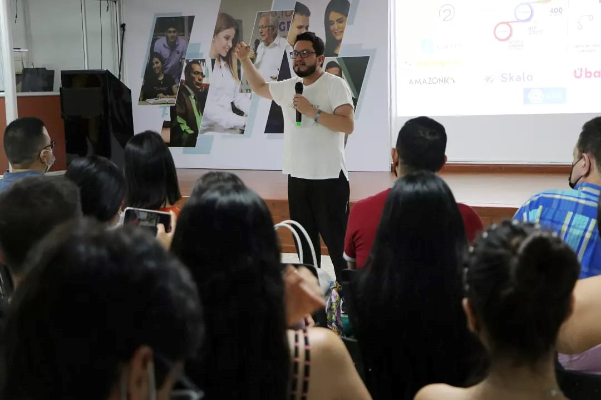

LA UNIVERSIDAD SIMÓN BOLÍVAR LE APUESTA A LA TRIADA: UNIVERSIDAD, EMPRESA, ESTADO A TRAVÉS DE MACONDOLAB

La iniciativa surge de la Alcaldía de Cúcuta con el fin de realizar procesos de transferencia de conocimiento y brindar herramientas practicas para facilitar los procesos de innovación en las empresas y los emprendimientos locales; el propósito es desarrollar competencias en innovación a partir del entendimiento de los clientes y sus contextos, para generar soluciones que puedan ser validadas e implementadas en los diferentes modelos de negocio.
Se busca formar y capacitar a 80 empresarios y emprendedores bajo la metodología Design Thinking o Pensamiento de Diseño, que maximiza la creatividad colectiva implementando técnicas complementarias como LEGO Serious Play para qué, a partir del juego, las personas mejoren su comunicación organizacional y fortalezcan habilidades para la resolución de problemas compartiendo diferentes puntos de vista, todo lo anterior en alianza con la empresa U-make quienes ponen al servicio toda su experiencia en innovación.
Los talleres se realizaron en la Universidad Simón Bolívar a través del Centro de Crecimiento Empresarial MacondoLab con una duración de 8 horas cada uno.
EMPRENDIMIENTO DE TRIPLE IMPACTO: ECONOMICO, SOCIAL Y AMBIENTAL
Impactar población emprendedora en temáticas sociales, ambientales y económicas a partir de la articulación y las alianzas estratégicas entre el estado, las empresas y la academia
CONOCIENDO EL TRABAJO DE LA ONG CRECER EN FAMILIA
DESCRIPCION
la ONG Crecer en Familia se encarga de apoyar a jóvenes en proceso de re socialización. Él es Adrián y cree en sus posibilidades Desde MacondoLab también creemos en el impacto social que tiene el desarrollo de competencias en Emprendimento. No sólo como motor de desarrollo, o de creación de oportunidades, sino como un espacio para el crecimiento personal y las ganas de creer en sí mismo. De ser dignificado. Somos solidarios y creemos que con este proyecto conjunto con la ONG crearemos un cambio. Gracias a los programas de Administración de Empresas, contaduría, trabajo social y psicología por su apoyo en esta idea.